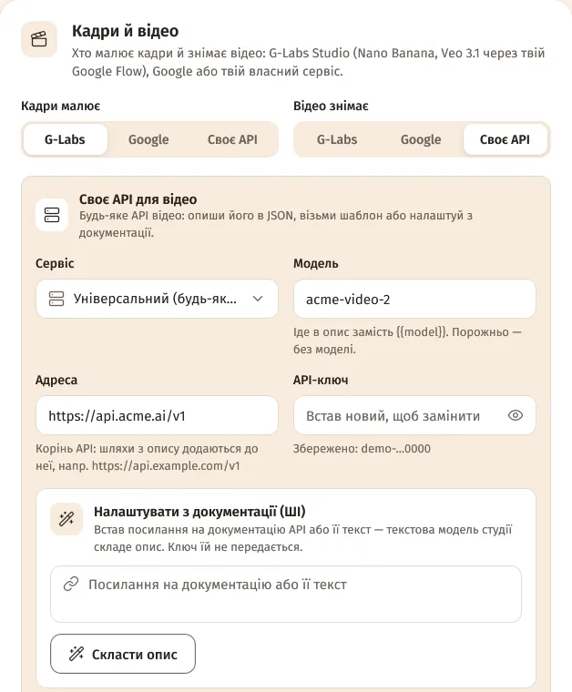
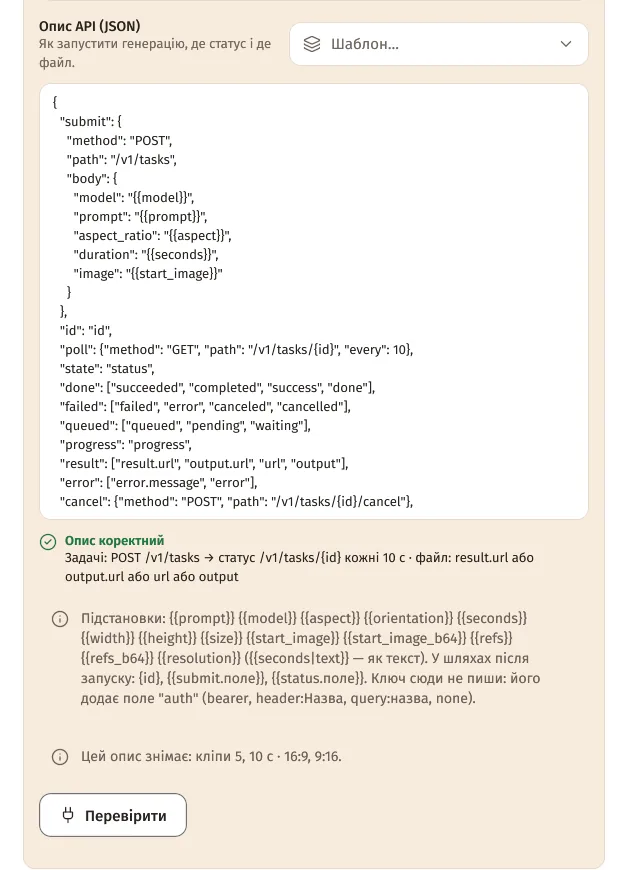
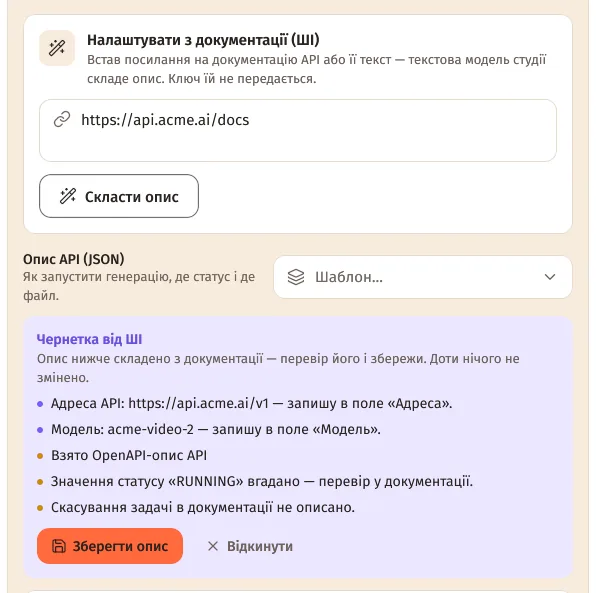
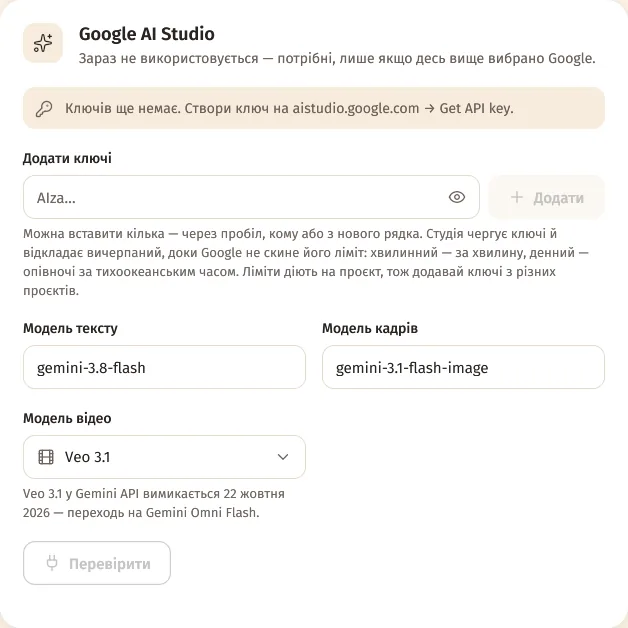
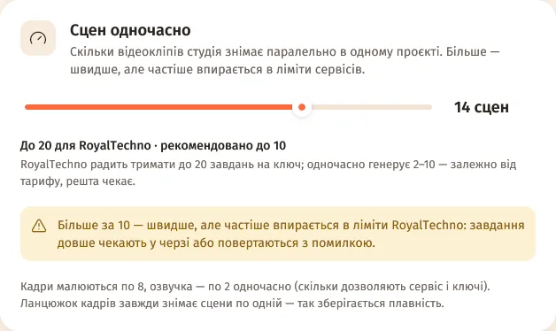

Зміст сторінки
Готові сервіси
Налаштування → Підключення → «Кадри» / «Відео» → «Хто малює кадри» / «Хто знімає відео» → «Своє API» → «Сервіс»:
- Кадри: OpenAI (GPT Image), fal.ai, Replicate, RoyalTechno, OpenAI-сумісний сервер.
- Відео: fal.ai, Replicate, Runway, Luma (Ray), MiniMax (Hailuo), RoyalTechno.
- Будь-який інший сервіс — «Універсальний (будь-яке API)».
Універсальний: три способи
- «Шаблон…» — «RoyalTechno (задачі)», «Replicate (predictions)», «fal.ai (черга)», «OpenAI Images (синхронно)» (лише кадри), «Простий синхронний: POST → посилання», «Асинхронні задачі (каркас)». Заміни шляхи й поля під своє API.
- Або «Налаштувати з документації (ШІ)» — див. нижче.
- Або встав свій JSON у поле «Опис API (JSON)».
- Заповни «Адреса» (корінь API, напр.
https://api.example.com/v1), «API-ключ» і «Модель» (іде в{{model}}) → «Перевірити».


Налаштувати з документації (ШІ)
- Встав посилання на документацію API (або сам її текст) у «Посилання на документацію або її текст».
- «Скласти опис». Текстова модель студії читає документацію (спершу шукає OpenAPI чи llms.txt) і складає опис. Ключі їй не передаються.
- Перевір «Чернетку від ШІ»: адреса, модель і що варто перевірити в документації.
- «Зберегти опис» (або «Відкинути»). До збереження нічого не змінюється. Потім — «Перевірити».

Сторінка документації, яку малює JavaScript, може бути майже порожньою для студії — тоді встав сам текст документації замість посилання. На все — до 8 хвилин.
Опис API: основи
Асинхронне API (задача → статус → файл):
{
"submit": {
"method": "POST",
"path": "/v1/tasks",
"body": {
"model": "{{model}}",
"prompt": "{{prompt}}",
"aspect_ratio": "{{aspect}}",
"duration": "{{seconds}}",
"image": "{{start_image}}"
}
},
"id": "id",
"poll": {"method": "GET", "path": "/v1/tasks/{id}", "every": 10},
"state": "status",
"done": ["succeeded", "completed", "success", "done"],
"failed": ["failed", "error", "canceled", "cancelled"],
"queued": ["queued", "pending", "waiting"],
"progress": "progress",
"result": ["result.url", "output.url", "url", "output"],
"error": ["error.message", "error"],
"cancel": {"method": "POST", "path": "/v1/tasks/{id}/cancel"},
"caps": {"lengths": [5, 10], "aspects": ["16:9", "9:16"]}
}| Поле | Що означає |
|---|---|
submit | Запит, що запускає генерацію: path додається до «Адреси», body — з підстановками. |
id, poll | Де номер задачі й як питати її стан ({id} у шляху, every — секунд). |
state, done, failed, queued | Поле стану і його значення. |
progress | Відсоток готовності. |
result | Де шукати файл: посилання, data:-URI чи base64; кілька варіантів по черзі. |
error, cancel | Де текст помилки; як скасувати задачу, яку студія перестала чекати. |
auth | Як передати ключ: bearer (типово), header:Назва, header:Назва:Префікс, query:назва, basic, none. |
test | Безкоштовний запит для «Перевірити»: баланс, акаунт чи список моделей. |
caps | Що вміє модель: lengths (секунди), maxRefs, aspects, startFrame, size. |
Синхронне API — без id і poll, файл приходить одразу у відповіді:
{
"submit": {
"method": "POST",
"path": "/v1/generate",
"body": {
"model": "{{model}}",
"prompt": "{{prompt}}",
"aspect_ratio": "{{aspect}}",
"duration": "{{seconds}}",
"image": "{{start_image}}"
}
},
"result": ["url", "video.url", "data.0.url", "output"],
"error": ["error.message", "error", "message"],
"caps": {"lengths": [5, 10], "aspects": ["16:9", "9:16"]}
}Підстановки: {{prompt}} {{model}} {{aspect}} {{orientation}} {{seconds}} {{width}} {{height}} {{size}} {{start_image}} {{start_image_b64}} {{refs}} {{refs_b64}} {{resolution}} ({{seconds|text}} — як текст). У шляхах після запуску — {id}, {{submit.поле}}, {{status.поле}}. Підстановка без значення (напр., немає кадру сцени) прибирає своє поле із запиту.
Сам ключ в опис не пиши — його додає поле auth, і йде він лише на адресу з «Адреси».
Перевірка
- Опис перевіряється наживо: «Опис коректний» і коротко, як він працює, або «Опис має помилки» зі списком.
- Попередження «Увага: …» підкажуть, чого бракує: напр., кадр сцени не передається — відео зніметься лише з тексту; немає
cancel— покинуту задачу сервіс доробить. - «Перевірити» нічого не генерує: робить лише запит
test. Без нього студія перевіряє тільки опис, а ключ і адресу перевірить перша генерація.
RoyalTechno
- Пресет «RoyalTechno» у «Своєму API» — і для кадрів, і для відео. Ключ
rt_live_…— у Telegram-боті @royaltechno_ai_bot, команда/api_key. - Кадри:
nano-banana-pro(типово),nano-banana-2,seedream-4.6,gpt-image-2. - Відео:
omni-flash(типово),veo-3.1,seedance-2.0,seedance-2.0-fast,seedance-2.0-mini,grok-imagine-1.5,grok-imagine-1.5-720p. - Довжини: Omni Flash — 4/6/8/10 с (до 7 опорних кадрів), Veo 3.1 — 8 с, Seedance — 2–15 с, Grok Imagine — 6/10 с. Лише 16:9 і 9:16.
- «Перевірити» нічого не генерує: показує тариф, моделі без ліміту, залишок на сьогодні й баланс.
- Розкадровка 3×3 і ланцюжок кадрів працюють через пресет RoyalTechno з моделлю
omni-flash(через «Універсальний» шаблон — ні).
Google: Gemini Omni Flash
- Налаштування → «Відео» → «Google» → «Модель відео Google»: «Gemini Omni Flash» (типово; кліпи 4/6/8/10 с, до 10 опорних кадрів) або Veo 3.1 / Fast / Lite.
- Veo 3.1 preview у Gemini API вимикається 22 жовтня 2026. Студія пише про це біля моделі, а після цієї дати сама перемкне на Gemini Omni Flash.
- Розкадровка 3×3 і ланцюжок кадрів тепер працюють і через Google — з Omni Flash.
- 1080p і 4K Omni масштабує з 720p — це довше.

Сцен одночасно
Налаштування → Підключення → «Сцен одночасно» — скільки кліпів знімати паралельно. Межа залежить від сервісу відео; вище рекомендованого студія попередить: швидше, але частіше впирається в ліміти.
| Сервіс відео | Максимум | Рекомендовано |
|---|---|---|
| G-Labs | 10 | 6 |
| 4 (+2 за кожен додатковий ключ, до 10) | 2 | |
| RoyalTechno | 20 | 10 |
| fal.ai | 20 | 4 |
| Replicate | 20 | 6 |
| Runway | 20 | 2 |
| Luma | 10 | 3 |
| MiniMax Hailuo / H3 | 10 / 20 | 4 / 6 |
| Інше своє API | 20 | 4 |

Кадри малюються щонайменше по 4 одночасно (до межі сервісу кадрів), озвучка — за кількістю ключів (до 8). Ланцюжок кадрів завжди знімає сцени по одній.
Питання
«Перевірити» каже, що ключ працює, а генерація падає
Перевір модель (вона має бути у твоєму тарифі) і поля result та state в описі. Текст помилки сервісу студія показує в «Черзі» й у проєкті.
Чи бачить ШІ мої ключі, коли складає опис?
Ні. Перед тим як надіслати документацію текстовій моделі, студія замінює всі свої ключі на «•••».
Чи працюють розкадровка 3×3 і ланцюжок кадрів зі своїм API?
Лише з Omni Flash: G-Labs, Google або пресет RoyalTechno. Інші моделі оживляють кадр сцени.